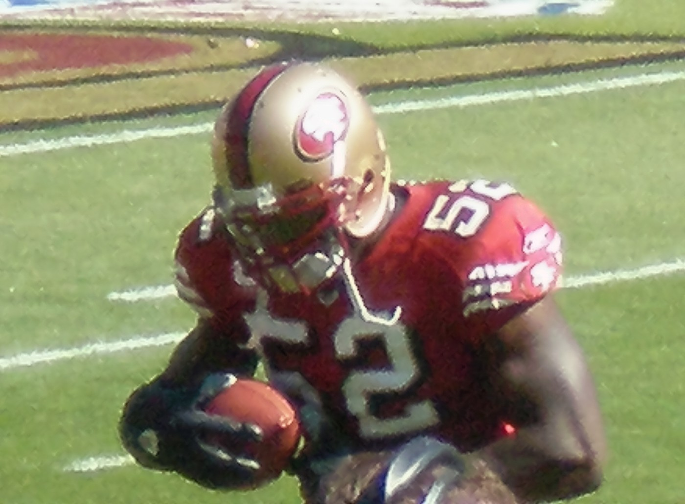
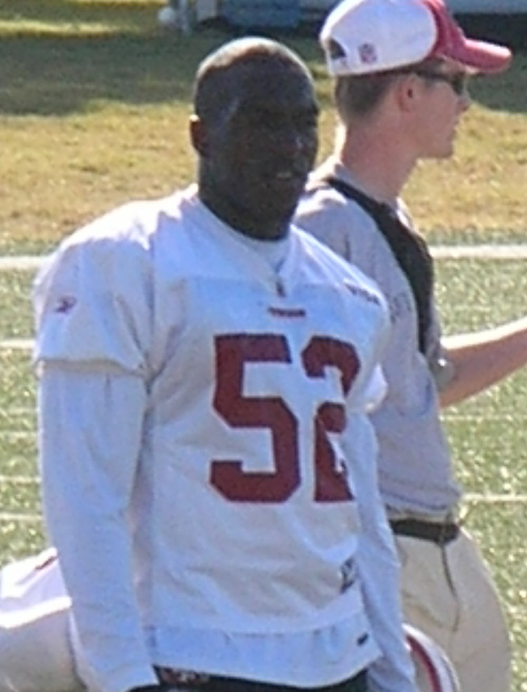
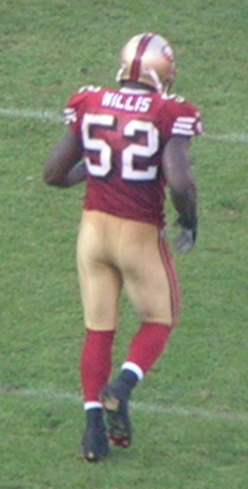
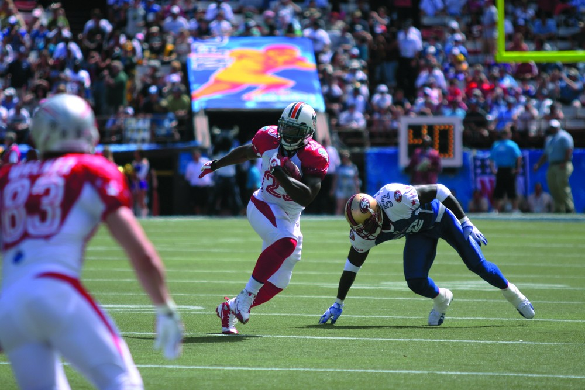

Patrick Willis
Eight seasons, seven Pro Bowls, five first team All Pros, and he never once looked like he was running at anything less than full speed.
The Patrick Willis Story
There have been a lot of great linebackers. There haven't been many who were the best at it from the day they walked in until the day they walked out. Patrick Willis was. Seven seasons, seven Pro Bowls. Then his feet gave out and he went home, and the Hall of Fame called anyway.
He was born on January 25, 1985, in Bruceton, Tennessee, and the start was brutal. By 10 he was working full time in cotton fields. The family lived at the bottom of a hill with no running water until he was 8, and he and his siblings hauled buckets of water down from their grandparents' house at the top. At 17, with an alcoholic father turning violent, he and his brothers and sister moved in with his high school basketball coach, Chris Finley, and his wife, Julie.
At Hollow Rock Bruceton Central he lettered in football, basketball and baseball and was nominated for Tennessee's Mr. Football as a lineman and as a back in the same season, the first player in state history to get both. Rivals called him a three star recruit. He picked Ole Miss over Memphis.
He got better every year in Oxford. As a senior in 2006 he led the SEC in tackles again, was a consensus All American and SEC Defensive Player of the Year, and won the Butkus Award and the Jack Lambert Award. That same year his brother Detris drowned while swimming with friends.
Then he ran a 4.56 forty at the Combine, and the 49ers took him 11th overall in 2007. Mike Singletary coached him directly, and Willis went to work in the middle of the 3 4 defense.
His rookie year was ridiculous. Eleven tackles and a forced fumble in his first game, a 20 to 17 win over Arizona. He held Adrian Peterson's Vikings in check. In overtime at Arizona he ran down Sean Morey from behind to save the game. He made 20 tackles and 2 sacks against Tampa Bay. He led the whole league with 174 tackles and was Defensive Rookie of the Year, first team All Pro and a Pro Bowler, the first 49ers defensive rookie in the Pro Bowl since Ronnie Lott.
He kept it going on bad teams. An 86 yard interception return for a touchdown against Seattle in 2008. Another league leading 152 tackles in 2009, a first team All Pro vote from 49 of 50 voters, and the pro Butkus Award. A career high 6 sacks in 2010, playing through a broken hand.
When Jim Harbaugh arrived in 2011, Willis finally had a winner around him. That defense went until week 16 without allowing a rushing touchdown, an NFL record, and the 49ers went 13 and 3. The next year they went to Super Bowl XLVII, where Willis made 10 tackles in the 34 to 31 loss to Baltimore.
He made his seventh straight Pro Bowl after the 2013 season. In 2014 a toe that had bothered him for years finally wouldn't let him play anymore. He had surgery that November, and on March 10, 2015, he retired at 30. He finished with 950 tackles, 20.5 sacks, 8 interceptions and 16 forced fumbles, all as a 49er.
He was named to the NFL's All Decade team for the 2010s, and the 49ers put him in their Hall of Fame in 2021. On February 8, 2024, his old teammate Bryant Young knocked on his door to tell him he was going to Canton.
On August 3, 2024, he was enshrined in the Pro Football Hall of Fame. He talked about carrying those buckets up the hill as a kid, and about the last play of his career. It's not how long you play, he told everybody, it's how impactful you are.
What He Meant to Us
Patrick Willis played most of his career on teams that weren't any good, and it didn't matter one bit. You'd watch a 5 and 11 team and still find yourself rewinding to see 52 come flying from the other side of the field to make a tackle he had no business making.
That rookie year still blows my mind. 174 tackles. Running down Sean Morey in overtime from behind. A first team All Pro as a rookie on a team that went 5 and 11. We knew right away what we had.
And then Harbaugh shows up and the defense becomes the scariest in football, and Willis is the guy in the middle of all of it. Nobody ran one in on us until week 16 in 2011. Nobody.
I was bummed when he retired at 30. I wanted more. But he was right about it. It's not how long you play. Seven Pro Bowls in seven healthy years, and a gold jacket. That's plenty.
In Pictures



Why He Was Clutch
Linebackers don't get game winning moments the way quarterbacks do, so Willis made his own. In overtime at Arizona as a rookie, Sean Morey had a 62 yard catch and run going, and Willis ran him down from behind. The 49ers won 37 to 31.
When the 49ers finally got to the playoffs, he was everywhere. Twenty nine tackles and a sack in the 2012 postseason, ten of those tackles in the Super Bowl. In eight career playoff games he had 71 tackles.
And the biggest thing he did was every week, the whole year. The 2011 defense didn't allow a rushing touchdown until week 16. That doesn't happen without a linebacker who gets to every ball carrier.
Clutch Moments
- September 10, 2007
The debut
On Monday night against Arizona in his first NFL game, Willis made 11 tackles, 9 of them solo, and forced a fumble in a 20 to 17 win. He was Rookie of the Week, the first of four times that season.
- November 25, 2007
Running down Sean Morey
In overtime at Arizona, Morey caught a pass and took off on a 62 yard catch and run. Willis chased him down from behind to make the tackle and save the game, and the 49ers won 37 to 31.
- December 23, 2007
Twenty tackles against Tampa Bay
At Candlestick, Willis piled up 20 tackles, 2 sacks, a forced fumble and a pass defended in a 21 to 19 win over the Buccaneers. He finished the season leading the NFL with 174 tackles.
- 2008 season
86 yards the other way
Against Seattle, Willis picked off a pass and returned it 86 yards for his first NFL touchdown. He made his second straight Pro Bowl, this time as a starter.
- October 4, 2009
Sacks and a pick six against the Rams
In a 35 to 0 win over St. Louis at Candlestick, Willis had 8 tackles, 2.5 sacks and a 23 yard interception return for a touchdown. He led the NFL in tackles again that year.
- 2011 season
Nobody runs on the 49ers
With Willis in the middle, the 49ers did not allow a rushing touchdown until week 16, setting an NFL record, and went 13 and 3 for their first division title since 2002.
- February 3, 2013
Super Bowl XLVII
Willis made 10 tackles in New Orleans as the 49ers lost 34 to 31 to Baltimore. He had 29 tackles and a sack across that postseason.
- August 3, 2024
Canton
After a long weather delay, Willis was enshrined in the Pro Football Hall of Fame with the Class of 2024.
The Highlights
What They Said About Willis
“I remember when I was carrying those buckets, I would tell myself, 'If I can make it from here all the way to the house without stopping, I'm going to get stronger.'”
“Everything I thought as a kid to now is happening in this instant”
“I can take that deep breath now and say it's done,”
“He didn't just want to learn his job, he wanted to learn everybody's job.”
“Nobody in the NFL plays their position better than Patrick Willis, and that is saying a lot,”
“He plays the game with a fire.”
Career Stats
| Year | Team | G | GS | Tkl | Solo | Ast | Sck | PD | Int | IntYds | TD | FF | FR |
|---|---|---|---|---|---|---|---|---|---|---|---|---|---|
| 2007 | SF | 16 | 16 | 174 | 135 | 39 | 4.0 | 5 | 0 | 0 | 0 | 2 | 1 |
| 2008 | SF | 16 | 16 | 141 | 109 | 32 | 1.0 | 10 | 1 | 86 | 1 | 1 | 1 |
| 2009 | SF | 16 | 16 | 152 | 114 | 38 | 4.0 | 8 | 3 | 33 | 1 | 3 | 0 |
| 2010 | SF | 15 | 15 | 128 | 101 | 27 | 6.0 | 5 | 0 | 0 | 0 | 2 | 0 |
| 2011 | SF | 13 | 13 | 97 | 74 | 23 | 2.0 | 12 | 1 | 10 | 0 | 4 | 2 |
| 2012 | SF | 16 | 16 | 120 | 88 | 32 | 0.5 | 9 | 2 | 2 | 0 | 2 | 1 |
| 2013 | SF | 14 | 14 | 104 | 82 | 22 | 3.0 | 1 | 0 | 0 | 0 | 2 | 0 |
| 2014 | SF | 6 | 6 | 34 | 29 | 5 | 0.0 | 3 | 1 | 0 | 0 | 0 | 0 |
| Career | 112 | 112 | 950 | 732 | 218 | 20.5 | 53 | 8 | 131 | 2 | 16 | 5 |
Led the NFL in tackles in 2007 and 2009. Scroll the table sideways on a phone.
Postseason
| Year | Team | G | GS | Tkl | Solo | Ast | Sck | PD | Int | IntYds | TD | FF | FR |
|---|---|---|---|---|---|---|---|---|---|---|---|---|---|
| 2011 | SF | 2 | 2 | 16 | 16 | 0 | 1.0 | 1 | 0 | 0 | 0 | 0 | 1 |
| 2012 | SF | 3 | 3 | 29 | 26 | 3 | 1.0 | 0 | 0 | 0 | 0 | 0 | 0 |
| 2013 | SF | 3 | 3 | 26 | 18 | 8 | 0.0 | 1 | 1 | -1 | 0 | 0 | 0 |
| Career | 8 | 8 | 71 | 60 | 11 | 2.0 | 2 | 1 | -1 | 0 | 0 | 1 |